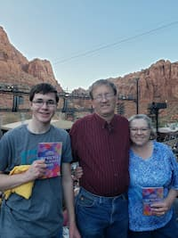

Joseph Lloyd Costner | WDD 130
Hi, my name is Joseph Lloyd Costner. I have grown up in Kirtland, New Mexico for nearly 25 years now and still love it here. I currently go to BYU-Idaho online in hopes that, someday, I will obtain a bachelor's degree in Professional Studies. Following this goal is part of my dream in becoming a professional genealogist, bringing together families, both living and deceased. I grew up in a family of 2 brothers, 1 sister, and two wonderful parents. I love to play and listen to music, read and write books, carve wood, and love to cook. This is my first time creating websites for this class, so I look forward to learning more this semester.